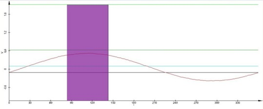
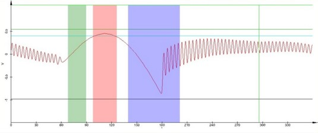

|
参数
|
按照 通用步骤中的步骤操作。DPFM的进一步调整（10.c）如下所述：
逼近
DPFM参数
探针和样品之间的最大力作用于正弦曲线的最大值处，这也是悬臂梁开始从样品回缩的点。
逼近后，图形窗口将显示如图1所示的正弦曲线或类似于图2的脉冲力曲线。在第一种情况下，悬臂梁的调制太小，无法使悬臂梁完全脱离样品，请参阅步骤8。


图2：带有Fmax（红色）、粘附力（蓝色）和刚度（绿色）搜索窗口的脉冲力曲线
测量
此附加文件的大小可能非常大（可达数GB）。
更多信息：
反馈设置、 PFM控制、 数据通道（粘附力, 刚度, 形貌, 反馈）
提示